Deploying a Model with vLLM on a single node with multiple GPUs
In this section will will deploy a Granite 3.3 8B Instruct model using vLLM.
For our Model Server we will be deploying a vLLM instance using a model packaged into an OCI container with ModelCar.
|
ModelCar is Generally Available as of OpenShift AI 2.16. ModelCar is a great option for smaller models like our 8B model. While it is still a relatively large container (15Gb) it is still reasonable to easily pull into a cluster. Treating the model as an OCI artifact allows us to easily promote the model between different environments using customers existing promotion processes. By contrast, dealing with promoting models between S3 instances in different environments may create new challenges. |
Lab: Creating the vLLM Instance
-
Open the OpenShift AI Dashboard and select the
vllmproject from the list of Data Science Projects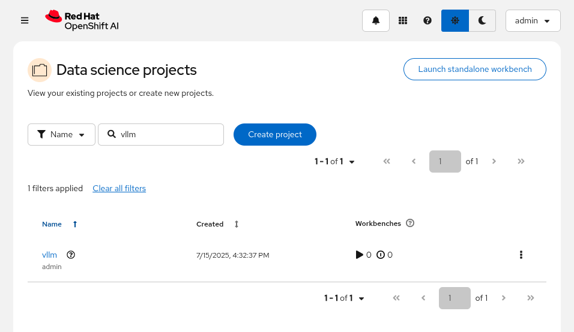 -
Select the
Modelstab and clickSelect single-modelif it hasn’t already been set for you.Multi-model serving (Model Mesh) was depreciated in OpenShift AI 2.19 and will be removed in a future release.
All ServingRuntimes that were previously available with the Multi-model serving platform are now available as single-model serving runtimes.
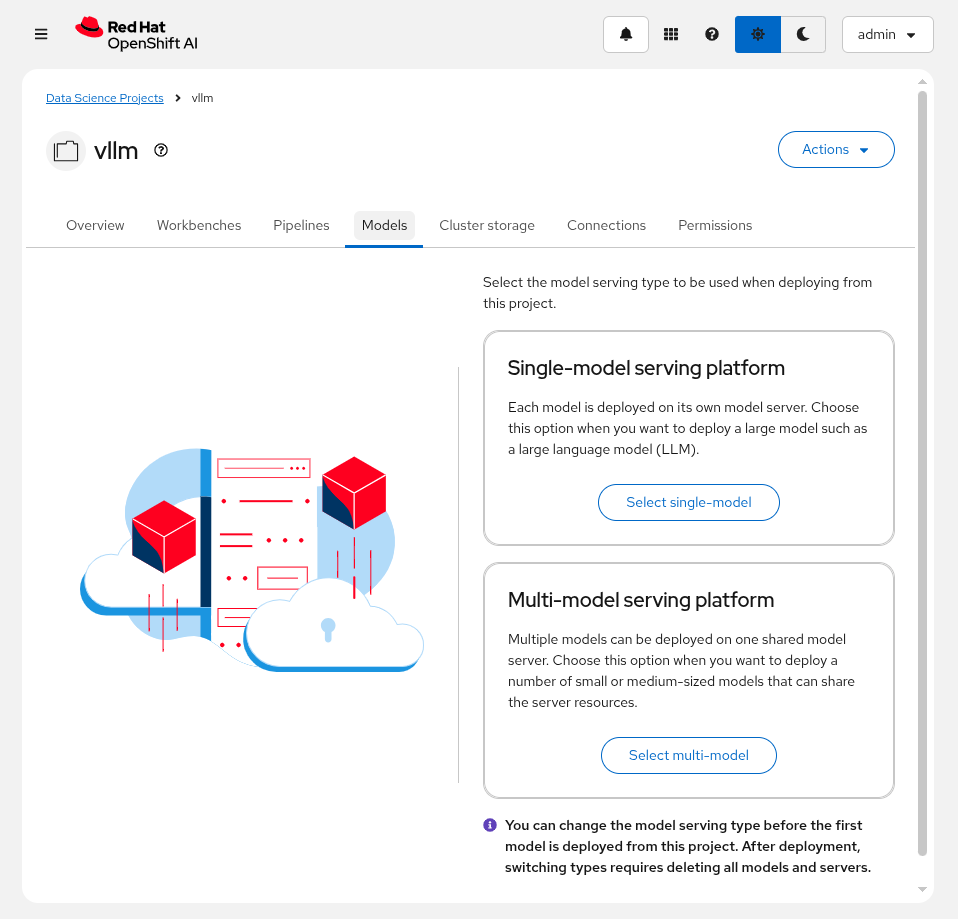 -
Select
Deploy model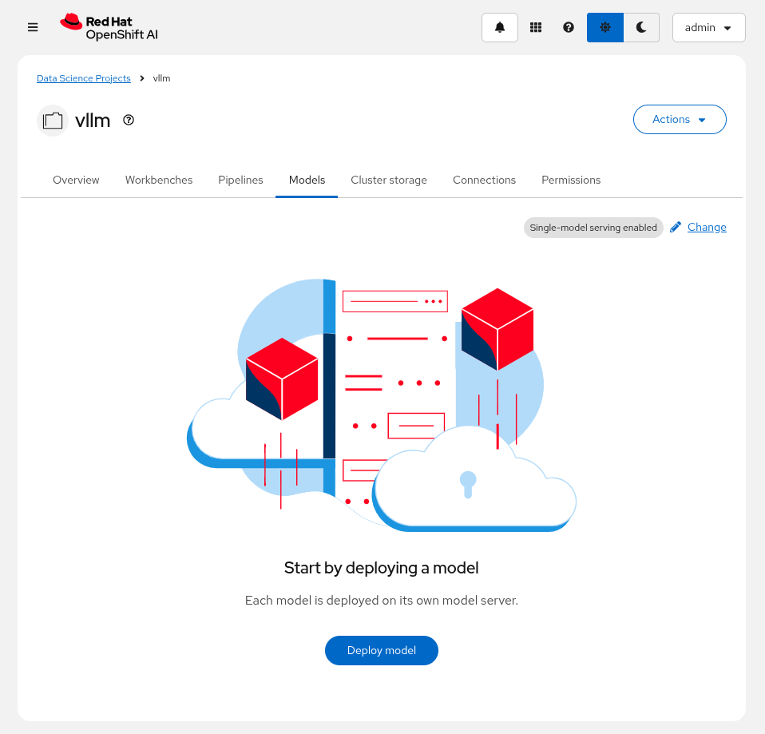 -
Enter the following information:
Model deployment name: granite-8b Serving runtime: vLLM NVIDIA GPU ServingRuntime for KServe Deployment mode: Advanced Number of model server replicas to deploy: 1 Model server size: Custom CPUs requested: 4 Cores CPUs limit: 8 Cores Memory requested: 8 GiB Memory limit: 16 GiB Accelerator: NVIDIA GPU Number of accelerators: 1 Make deployed models available through an external route: Checked Require token authentication: UncheckedIn OpenShift AI 2.22, a validate was added to the Requests/Limits for the model server which prevents you from entering a value for the Request if it is less than the Limit. This means that you must enter the value for the Limit first, and then you can enter the value for the Request.
Feel free to vote/follow the feature request RHAIRFE-483 to help us improve this experience.
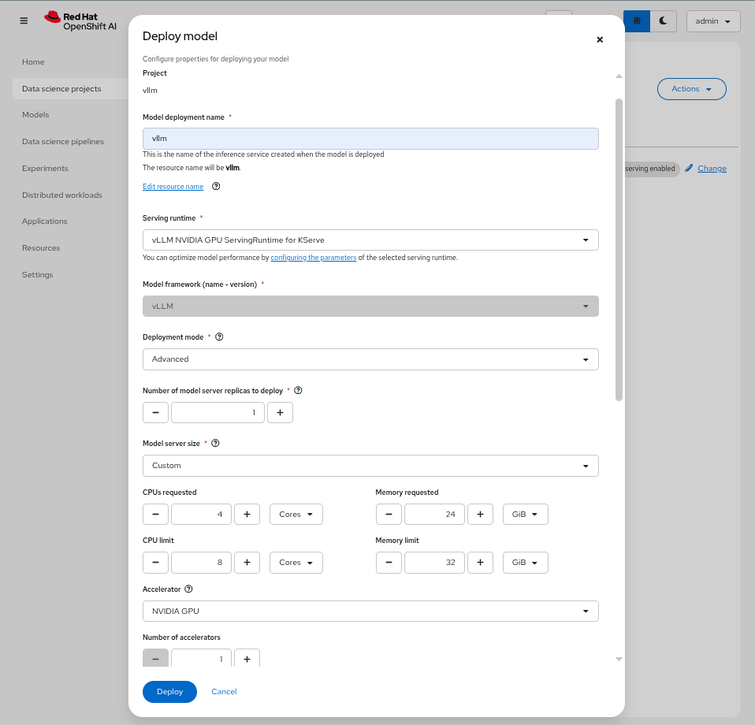OpenShift AI provides a deployment option of
AdvancedandStandard. TheAdvancedoption uses KNative Serverless and Service Mesh (Istio) to deploy the model server. TheStandardoption is also know as aRawDeploymentand uses standard Kubernetes Deployment objects.The
Advancedoption allows you to configure advanced scaling capabilities such as Scale to Zero and allows you to autoscale the number of replicas based on the number of queued requests.The
Standardoption provides more limited scaling capabilities which includes scaling based on the CPU/Memory utilization of the model server. This is of limited use for LLMs since the bottleneck of the workload is dependent on the GPU resources. -
In the
Source model locationsection, choose the option toCreate connection. Enter the following information:Connection type: URI - v1 Connection name: granite-3-3-8b-instruct URI: oci://quay.io/redhat-ai-services/modelcar-catalog:granite-3.3-8b-instruct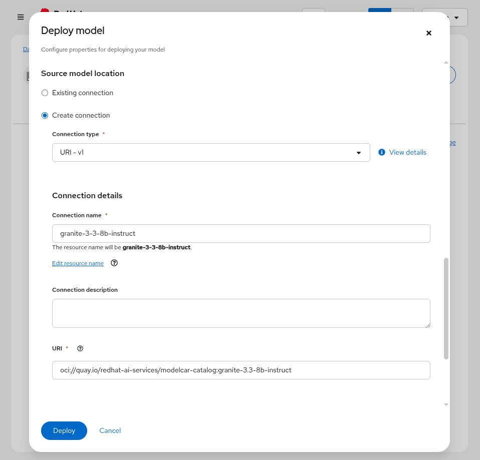The Dashboard provides an data connection option for
OCI compliant registry - v1which we use instead of the URI option. The OCI option helps to automatically format theoci://prefix for the URI and will also give us an option to setup pull secrets for the container registry.However, the pull secrets are currently not optional and we don’t need it since our ModelCar image is public. Additionally, the OCI option does have a few other requirements that aren’t super intuitive and should be improved in the future.
If you do wish to use the OCI option, you can simply set the pull secret as an empty object
{}.You can find the image container for our model here alongside other ModelCar images that you can try.
Additionally, the source for building these ModelCar images can be found on GitHub.
For more information on ModelCar see the KServe Serving models with OCI images documentation.
-
Click
Deployto deploy the model.A copy of the image has already been pulled onto the GPU node to help speed up deploying the model, but deploying LLMs can take quite some time.
KServe uses KNative Serverless to manage the model servers which has a default timeout of 10 minutes which means that if the model server takes longer than 10 minutes to deploy it will automatically terminate the pod and mark it as failed.
You can extend the timeout by adding the following annotation to the
predictorsection of theInferenceService:apiVersion: serving.kserve.io/v1beta1 kind: InferenceService metadata: name: granite-8b spec: predictor: annotations: serving.knative.dev/progress-deadline: 30m -
After creating the model serving instance, check the pods in the
vllmnamespace. You should see a pod calledgranite-8b-predictor-00001-deployment-*oc get pods -n vllmOur pod is built with an init container that helps to validate the model files are present on the ModelCar container. Additionally, the pod has four containers. The main container,
kserve-containeris the vLLM container that is responsible for serving the model. This container will take some time to startup while the rest go to ready fairly quickly. -
Next, check the logs of the pod the
kserve-containercontainer.oc logs -l serving.knative.dev/service=granite-8b-predictor -n vllm --followYou can exit the logs by pressing
Ctrl+C.You will find that the pod with eventually fail with the following error message.
ERROR 07-16 07:47:09 [core.py:387] ValueError: To serve at least one request with the models's max seq len (131072), (20.00 GiB KV cache is needed, which is larger than the available KV cache memory (3.84 GiB). Based on the available memory, Try increasing `gpu_memory_utilization` or decreasing `max_model_len` when initializing the engine.vLLM is failing to start because it does not have enough vRAM to support the sizing of the default KV Cache. At this point, we can limit the size of the KV Cache using the
--max-model-lenparameter, or we can add additional GPU resources to the instance to increase the available vRAM. -
From the
Modelstab of the OpenShift AI Dashboard, click on the three-dots menu on the right and then edit: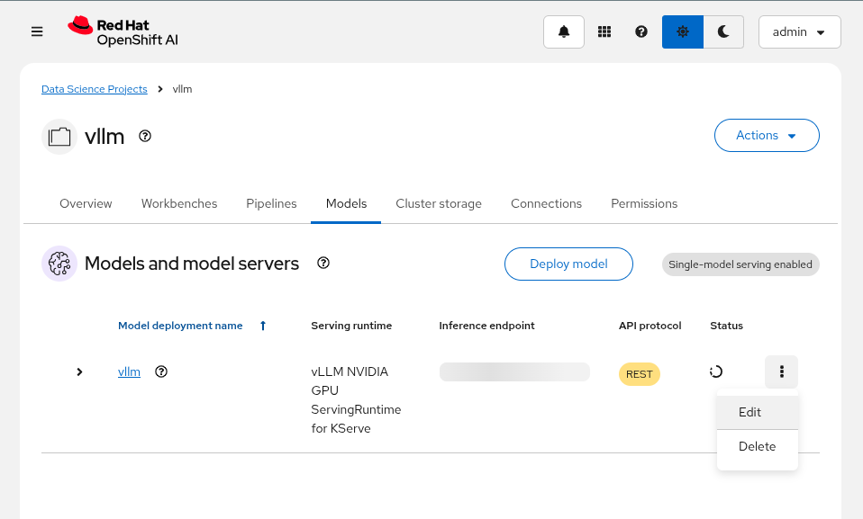 -
Update
Number of acceleratorsto 2: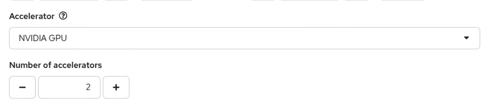Then add the following to the
Additional serving runtime argumentsfield:--tensor-parallel-size=2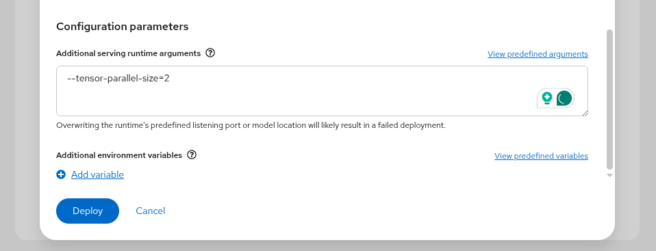 -
This will create an updated deployment called
granite-8b-predictor-00002-deployment-*:oc get pods -n vllmNAME READY STATUS RESTARTS AGE granite-8b-predictor-00002-deployment-6f7cdc67bd-8lhkn 3/4 Running 0 17s -
Follow the logs of the pod until it is ready.
oc logs -l serving.knative.dev/service=granite-8b-predictor -n vllm --followINFO 07-16 07:53:42 [__init__.py:239] Automatically detected platform cuda. INFO 07-16 07:53:45 [api_server.py:1034] vLLM API server version 0.8.5.dev411+g7ad990749 [...] INFO: Started server process [4] INFO: Waiting for application startup. INFO: Application startup complete. -
Check the status of the pod again to see that the pod is now ready.
oc get pods -n vllmNAME READY STATUS RESTARTS AGE granite-8b-predictor-00002-deployment-6f7cdc67bd-8lhkn 4/4 Running 0 1337sAdditionally, in the OpenShift AI Dashboard, you can see the model is successfully deployed and is ready to use, which is signified with the green checkmark in the Status column.
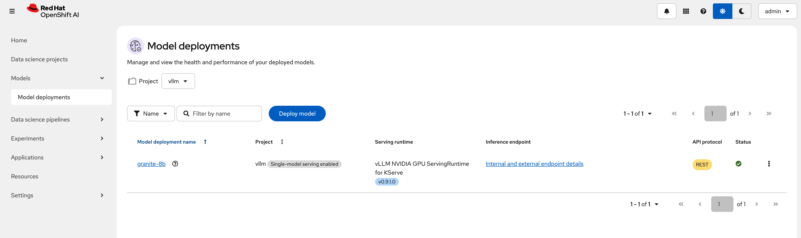 -
(Optional) The OpenShift AI Dashboard created two KServe objects, a
ServingRuntimeand anInferenceService. From the OpenShift Web Console, navigate to theHome>Searchpage and use theResourcesdrop down menu to search for and select those objects. Spend a few minutes reviewing the objects created by the Dashboard.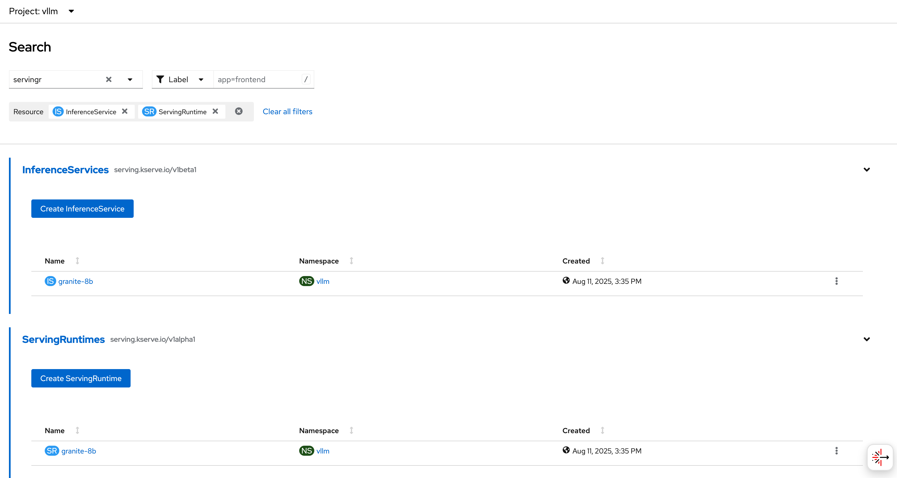
Lab: Checking our GPU usage
In this section we will explore what GPU resources are available to the vLLM pod and the resource utilization of the pod.
-
To rsh into the pod, start out by getting the pod name:
oc get pods -l serving.knative.dev/service=granite-8b-predictor -n vllm -o namepod/granite-8b-predictor-00002-deployment-<sha> -
Next, use the pod name to rsh into the pod:
oc -n vllm rsh granite-8b-predictor-00002-deployment-<sha> -
Finally, run the
nvidia-smicommand to view the available GPUs and the vRAM utilization.nvidia-smi+-----------------------------------------------------------------------------------------+ | NVIDIA-SMI 570.148.08 Driver Version: 570.148.08 CUDA Version: 12.8 | |-----------------------------------------+------------------------+----------------------+ | GPU Name Persistence-M | Bus-Id Disp.A | Volatile Uncorr. ECC | | Fan Temp Perf Pwr:Usage/Cap | Memory-Usage | GPU-Util Compute M. | | | | MIG M. | |=========================================+========================+======================| | 0 NVIDIA L4 On | 00000000:38:00.0 Off | 0 | | N/A 62C P0 38W / 72W | 21582MiB / 23034MiB | 0% Default | | | | N/A | +-----------------------------------------+------------------------+----------------------+ | 1 NVIDIA L4 On | 00000000:3E:00.0 Off | 0 | | N/A 58C P0 35W / 72W | 21582MiB / 23034MiB | 0% Default | | | | N/A | +-----------------------------------------+------------------------+----------------------+ +-----------------------------------------------------------------------------------------+ | Processes: | | GPU GI CI PID Type Process name GPU Memory | | ID ID Usage | |=========================================================================================| +-----------------------------------------------------------------------------------------+The
nvidia-smicommand will output details about the GPUs available to the pod, and the vRAM being utilized.You should see two GPUs available to the pod, and somewhere around 21574MiB of vRAM being utilized on each GPU.
-
To exit the pod, use
ctrl+Dor typeexit.
Lab:Testing vLLM Endpoints
Finally, we will access the Swagger docs page to test our vLLM endpoint.
-
To start we will need to find the endpoint URL for the served model. From the OpenShift AI Dashboard, navigate to the Models tab and click on the
Internal and external endpoint detailsto find the URL. Click theCopybutton to copy the URL to your clipboard.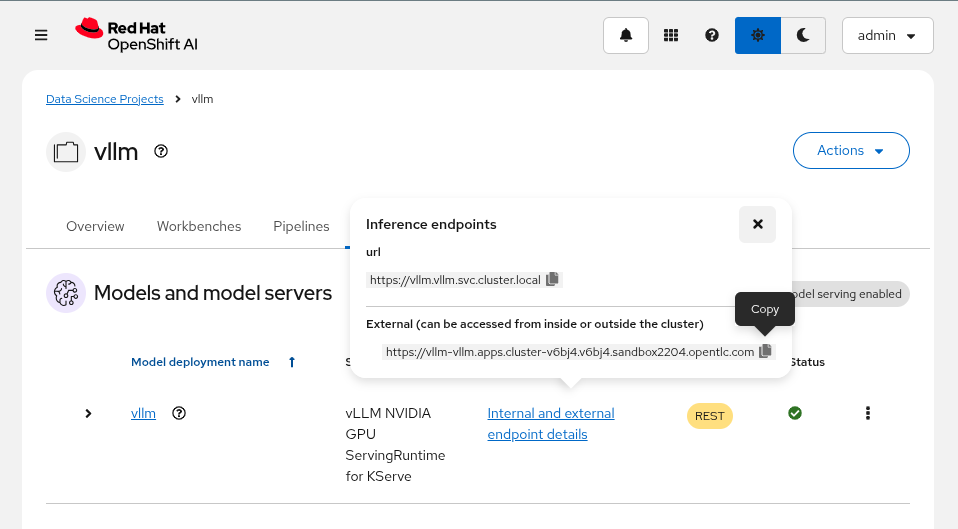Our vLLM instance does not create a normal OpenShift route since we are deploying with "Advanced" (aka Serverless mode) so you won’t find it under the normal
Networking>Routesmenu.Instead it creates a KNative Serving Route object which can be found in
Serverless>Servingor with the following:oc get routes.serving.knative.dev -n vllm
-
Using the route we copied in the previous step, open a new tab and paste it into the URL field with
/docsat the end to access a FastAPI Swagger Docs page for vLLM.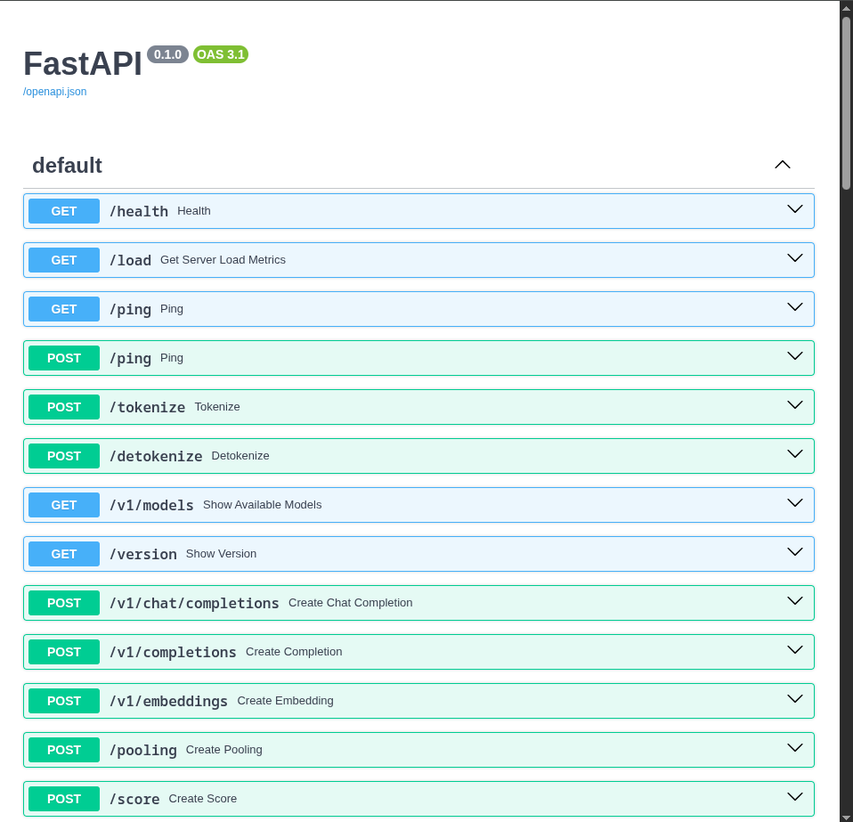 -
Find the
GET /v1/modelsendpoint section and expand it. Use theTry it outoption to query the endpoint by clickingExecute.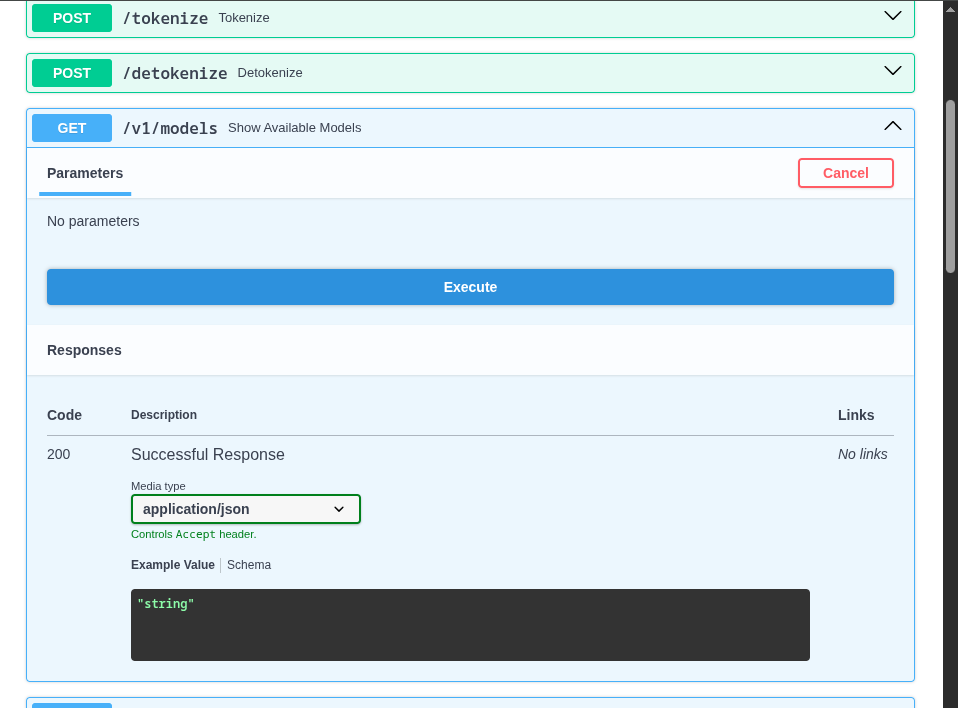 -
Find the model name in the response body in the
idfield of the first entry in thedataarray.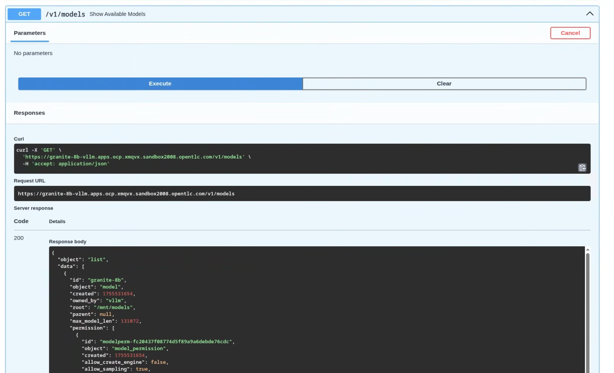The model id should match the name of the model server we created in the OpenShift AI Dashboard (e.g.
granite-8b).However, you can set the model name to any value you want by setting an additional argument for the model server. This is commonly used to set the model name to match the Hugging Face model name, which may contain characters that are not allowed in the model name field when creating the model server.
---served-model-name="ibm-granite/granite-3.2-8b-instruct" -
Once you have the model name, find the
POST /v1/chat/completionsendpoint and use theTry it outand use the following as the Request body.{ "model": "granite-8b", "messages":[ { "role": "system", "content": "You're an helpful assistant." }, { "role": "user", "content": "Who is Michael Jordan?" } ] }
Click
Executeto send the request to the model server. You should receive a response with an answer to the question.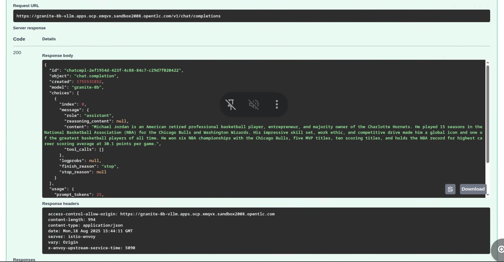
Conclusion
Congratulations! You have successfully deployed a model with vLLM on a single node with multiple GPUs.
In this lab you learned how to:
-
Deploy a model with vLLM on a single node with multiple GPUs
-
Check the GPU usage of the model server
-
Test the vLLM endpoint
|
Running into a 404 error on the OCP web console after trying this? There is a known issue that can cause the OCP Web console to stop responding after accessing the Swagger docs. To get around this, try accessing the OCP Web console through an Incognito window or a different browser. |